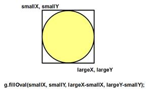

SizeableOval
Create a
program that draws a randomly colored oval each time
that the user drags and releases with his mouse.
To complete
this you should create instance fields for four ints,
the x and y of where you first PRESSED the mouse, and the x and y of where your
mouse was most recently dragged to.
Drawing the temporary size changing oval should be done
in the paintCanvas method, because it is not a
permanent part of the background image.
Each time paintCanvas is called it should
first paint the background image, then the temporary oval that is currently
being dragged. Remember that fillOval takes in an x,y
and a width and height. Do not just
throw both points into the parameters and expect them to work. Do some calculations.
Once the user RELEASES the mouse is when the
Oval actually gets drawn to the background.
This means that in the mouseReleased method
you will want to finally draw the oval to your background
Picture. This will cause it to be a permanent part of
the background.
Tricky
Bit: The fillOval
command only work if the x and y are the upper
left corner. This is fine when the user
drags from upper left to bottom right, but what if the user drags in the
opposite direction? This would cause the
upper left corner to be different than just where the mouse was PRESSED. To fix this you need to recalculate each time
where the NEW upper left corner is so that it will be able to draw the oval.
If you have 4
variables xStart,yStart,xEnd,and
yEnd you must find the SMALLEST x value and the
SMALLEST y value to be the upper left corner of the Oval.

int
smallX;
int
largeX;
int
smallY;
int
largeY;
//code to put
the right values into smallX,largeX,smallY,
and largeY.
if( xStart <
xEnd )
{
smallX
= …
largeX
= …
}
else
{…
g.fillOval(smallX, smallY, largeX-smallX, largeY-smallY);
For those that are lost, here is the same program broken down into parts. Start with an SCanvas that is set up to detect when the mouse is being pressed. This is the same boolean trick that you've been using.
Phase 1: Only a temporary oval
Create instance fields for xStart,yStart, xEnd, and yEnd. Also add ints for red,green, and blue.
In onMousePress, set xStart and yStart using m. Randomize red,green,blue.
In onMouseMove, set xEnd and yEnd, but only if the mouse is currently
pressed.
In paintCanvas, use brush with xStart,yStart, xEnd, and yEnd to draw an oval
Run your program to see if the temporary oval shows up. At this point it doesn’t have to ‘save’ or work when you drag upward.
Phase 2: Saving the oval to a background
Add to the instance fields a Picture and PaintBrush
In the Constructor, set up the two new instance fields
In the paintCanvas method, draw the Picture as the first line of the method
In onMouseRelease, use bgBrush with xStart,yStart, xEnd, and yEnd to draw an oval
Run your program to make sure that when you let go of the mouse, the oval is saved to the background. It will not work when you drag upward.
Phase 3: Dragging upward
Go to your paintCanvas method.
Before you paint the oval, add the 4 local variables smallX,smallY,largeX,and largeY.
Use if statements to determine if xStart or xEnd should go into smallX or largeX. Repeat for y.
Change your paint command to use smallX,smallY,etc. instead of xStart,yStart etc.
Repeat the same process in your onMouseRelease method